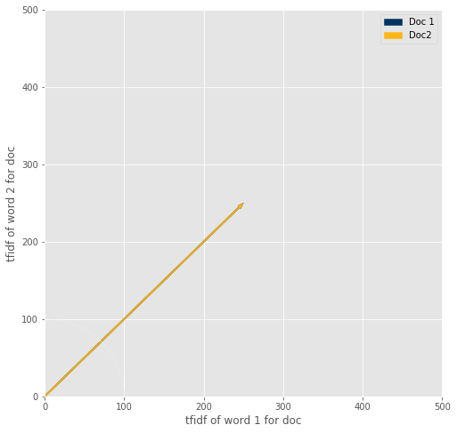

CUNEIF 102A
Professor Veldhuis
Sumerian Text Analysis
This notebook introduces how to use Python and Jupyter Notebooks, how to read in and process data, and how to find differences between texts based on their words (what measurements we can use to find the “distances” between texts).
Module Developers: Sujude, Erik, Jonathan, Stephanie
Section 1: Intro to Python
- Learn how to work with Jupyter notebooks.
- Learn about variables in Python, including variable types, variable assignment, and arithmetic.
- Learn about functions in Python, including defining and calling functions, as well as scope.
Exercise
Try running the code below. What happens?
# CODE
print("Hello World!")
Hello World!
Now, let’s try editing the code. In the cell below, replace “friend” with your name for a more personalized message.
print("Welcome to Jupyter notebooks, friend.")
Welcome to Jupyter notebooks, friend.
Programming in Python
Now that you are comfortable with using Jupyter notebooks, we can learn more about programming in this notebook.
What is Programming?
Programming is giving the computer a set of step-by-step instructions to follow in order to execute a task. It’s a lot like writing your own recipe book! For example, let’s say you wanted to teach someone how to make a PB&J sandwich:
- Gather bread, peanut butter, jelly, and a spreading knife.
- Take out two slices of bread.
- Use the knife to spread peanut butter on one slice of bread.
- Use the knife to spread jelly on the other slice of bread.
- Put the two slices of bread together to make a sandwich.
Just like that, programming is breaking up a complex task into smaller commands for the computer to understand and execute.
In order to communicate with computers, however, we must talk to them in a way that they can understand us: via a programming language.
There are many different kinds of programming languages, but we will be using Python because it is concise, simple to read, and applicable in a variety of projects - from web development to mobile apps to data analysis.
Variables
In programming, we often compute many values that we want to save so that we can use the result in a later step. For example, let’s say that we want to find the number of words in a group of texts. Each text in the group has 100 words, and there are 20 texts. We can easily calculate this with the following:
$100 * 20 = 2000$ words
However, let’s say that your friend Alexander asked you how many words there are in three groups (same conditions as the group explained above). We could, of course, perform the calculation in a similar manner:
$(100 * 20) * 3 = 6000$ words
But we see that we repeated the calculation in parentheses above. Instead of doing this calculation again, we could have saved the result from our first step (calculating the number of words in a group of 20 texts) as a variable.
# This is Python code that assigns variables.
# The name to the left of the equals sign is the variable name.
# The value to the right of the equals sign is the value of the variable.
# Press Shift-Enter to run the code and see the value of our variable!
words_in_group = 20 * 100 # This is equal to 2000.
words_in_group
2000
Then, we can simply multiply this variable by three to get the number of words in three groups of texts:
# The code below takes the number of seconds in a day (which we calculated in the previous code cell)
# and multiplies it by 3 to find the number of seconds in 3 days.
words_in_three_group = words_in_group * 3 # This is equal to 259200.
words_in_three_group
6000
As you can see, variables can be used to simplify calculations, make code more readable, and allow for repetition and reusability of code.
Variable Types
Next, we’ll talk about a few types of variables that you’ll be using. As we saw in the example above, one common type of variable is the integer (positive and negative whole numbers). You’ll also be using decimal numbers in Python, which are called doubles (positive and negative decimal numbers).
A third type of variable used frequently in Python is the string; strings are essentially sequences of characters, and you can think of them as words or sentences. We denote strings by surrounding the desired value with quotes. For example, “Data Science” and “2017” are strings, while bears and 2020 (both without quotes) are not strings.
Finally, the last variable type we’ll go over is the boolean. They can take on one of two values: True or False. Booleans are often used to check conditions; for example, we might have a list of dogs, and we want to sort them into small dogs and large dogs. One way we could accomplish this is to say either True or False for each dog after seeing if the dog weighs more than 15 pounds.
Here is a table that summarizes the information in this section:
| Variable Type | Definition | Examples |
|---|---|---|
| Integer | Positive and negative whole numbers | 42, -10, 0 |
| Double | Positive and negative decimal numbers | 73.9, 2.4, 0.0 |
| String | Sequence of characters | "Go Bears!", "variables" |
| Boolean | True or false value | True, False |
Arithmetic
Now that we’ve discussed what types of variables we can use, let’s talk about how we can combine them together. As we saw at the beginning of this section, we can do basic math in Python. Here is a table that shows how to write such operations:
| Operation | Operator | Example | Value |
|---|---|---|---|
| Addition | + | 2 + 3 |
5 |
| Subtraction | - | 2 - 3 |
-1 |
| Multiplication | * | 2 * 3 |
6 |
| Division | / | 7 / 3 |
2.66667 |
| Remainder | % | 7 % 3 |
1 |
| Exponentiation | ** | 2 ** 0.5 |
1.41421 |
In addition, you can use parentheses to denote priority, just like in math.
As an exercise, try to predict what each of these lines below will print out. Then, run the cell and check your answers.
q_1 = (3 + 4) / 2
print(q_1) # What prints here?
q_2 = 3 + 4 / 2
print(q_2) # What prints here?
some_variable = 1 + 2 + 3 + 4 + 5
q_3 = some_variable * 4
print(q_3) # What prints here?
q_4 = some_variable % 3
print(q_4) # What prints here?
step_1 = 6 * 5 - (6 * 3)
step_2 = (2 ** 3) / 4 * 7
q_5 = 1 + step_1 ** 2 * step_2
print(q_5) # What prints here?
3.5
5.0
60
0
2017.0
Strings
You can do many things with strings. Today you’ll learn how to concatenate and find the length of strings.
Concatenation is basically addition but with strings. For example:
print("University " + "of California, " + "Berkeley")
school = "UC Berkeley "
department = "Near Eastern Studies "
year = "2018"
print(school + department + year)
University of California, Berkeley
UC Berkeley Near Eastern Studies 2018
Functions
So far, you’ve learnt how to carry out basic operations on your inputs and assign variables to certain values. Now, let’s try to be more efficient.
Let’s say we want to perform a certain operation on many different inputs that will produce distinct outputs. What do we do? We write a function.
A function is a block of code which works a lot like a machine: it takes an input, does something to it, and produces an output.
The input is put between brackets and can also be called the argument or parameter. Functions can have multiple arguments.
Try running the cell below after changing the variable name:
# Edit this cell to your own name!
name = "John Doe"
# Our function
def hello(name):
return "Hello " + name + "!"
hello(name)
'Hello John Doe!'
Interesting, right? Now, you don’t need to write 10 different lines with 10 different names to print a special greeting for each person. All you need to is write one function that does all the work for you!
Functions are very useful in programming because they help you write shorter and more modular code. A good example to think of is the print function, which we’ve used quite a lot in this module. It takes many different inputs and performs the specified task, printing its input, in a simple manner.
Now, let’s write our own function. Let’s look at the following rules:
Defining
- All functions must start with the “def” keyword.
- All functions must have a name, followed by parentheses, followed by a colon. Eg. def hello( ):
- The brackets may have a variable that stores its arguments (inputs)
- All functions must have a “return” statement which will return the output. Think of a function like a machine. When you put something inside, you want it to return something. Hence, this is very important.
Calling
After you define a function, it’s time to use it. This is known as calling a function.
To call a function, simply write the name of the function with your input variable in parantheses (argument).
def #name(argument):
return # function must return a value
# Calling our function below...
my_first_function(name)
Scope
Programming is great, but it can also be quite peculiar sometimes. For example, each variable defined outside of any functions by default, is global.
Try executing the code below:
# Global Variable - name
# Ninurta is from "Ninurta's return to Nibru: a šir-gida to Ninurta"
description = "Son of Enlil!"
# our function
def title(description):
return "Ninurta, " + description
# calling our function
title(description)
# un-comment the line below
#title("Warrior of Enlil")
'Ninurta, Son of Enlil!'
Even though your argument was called decription, it didnt output “Son of Enlil”, which was the global value of the variable called decription. Instead, it gave preference to the local value which was given to the function as an argument, “Warrior of Enlil.”
Think of it as filling your coffeemaker (function) up with coffee (variable). If you have a variable with global access called decription which is filled with coffee called “Son of Enlil”, you can choose to either:
1) Not input another value in your function. (Use the same name of the global variable as your argument)
In this case, the global type of coffee will still be used.
2) Choose to fill another value. In this case, your function will assign the value you pass as the argument to the “variable” which is the argument.
Think of it as overriding your global coffee and putting a new type of coffee into your coffeemaker.
Activity
Using the rules of scope you’ve learned so far, complete the function puzzle to output the value 35.
# Scope Puzzle!
x = 5
y = 6
z = 7
def puzzle(x, y):
return x * y
# fill in this function call
puzzle()
Control
Sometimes, we want to manipulate the flow of our code. For example, we might want our code to make decisions on its own or repeat itself a certain amount of times. By implementing control structures, we can avoid redundant code and make processes more efficient.
Conditionals
We use conditionals to run certain pieces of code if something is true. For example, we should only go to the grocery store if we are out of peanut butter!
We use comparators to determine whether an expression is true or false. There are six comparators to be aware of:
- Equal to: ==
- Not equal to: !=
- Greater than: >
- Greater than or equal to: >=
- Less than: <
- Less than or equal to: <=
Let’s try it out!
# EXERCISE 1
# Determine whether the following will print true or false
# Run the code to check your answers!
print(10 == 10)
print(2016 < 2017)
print("foo" != "bar")
print( (1+2+3+4+5) <= (1*2*3))
True
True
True
False
Now that we know how to compare values, we can tell our computer to make decisions using the if statement.
If Statements
An if statement takes the following form:
if (condition1):
# code to be executed if condition1 is true
elif (condition2):
# code to be executed if condition2 is true
else:
# code to be executed otherwise
With if statements, we can control which code is executed. Check out how handy this can be in the activity below!
# We want to see what part of a Sumerian text someone is reading.
# Modify the variables below so you know what page someone is on after a certain time
# Run the code when you're done to see the results.
print("Read 'Dumuzid's dream'")
minutes = 5
line_num = 10
if (minutes >= 5):
print("He started reading 'Dumuzid's dream'")
if (line_num < 5):
print("Began paragraph 1: His heart was full of tears as he went out into the countryside. The lad's heart was full of tears as he went out into the countryside...")
elif (line_num >= 5 and line_num < 15):
print("Began paragraph 2: Grieve, grieve, O countryside, grieve! O countryside, grieve! O marshes, cry out!")
else:
print("Began paragraph 3: -- it was a dream! He shivered -- it was sleep! He rubbed his eyes, he was terrified.")
else:
print("He did not have enough time to finish reading 'Dumuzid's dream'.")
Read 'Dumuzid's dream'
He started reading 'Dumuzid's dream'
Began paragraph 2: Grieve, grieve, O countryside, grieve! O countryside, grieve! O marshes, cry out!
For Loops
We can also regulate the flow of our code by repeating some action over and over. Say that we wanted to greet ten people. Instead of copying and pasting the same call to print over and over again, it would be better to use a for loop.
A basic for loop is written in the following order:
- The word “for”
- A name we want to give each item in a sequence
- The word “in”
- A sequence (i.e. “range(100)” to go through numbers 0-99
For example, to greet someone ten times, we could write:
# Run me to see "hello!" printed ten times!
for i in range(10):
print("hello!")
hello!
hello!
hello!
hello!
hello!
hello!
hello!
hello!
hello!
hello!
We can also iterate over a list of number of strings. For example, let’s say we have a list of tiltles from texts:
texts = ["title_1", "title_2", "title_3", "title_4"]
for text in texts:
print(text)
title_1
title_2
title_3
title_4
In this way, for loops help us avoid redundant code and have useful capabilities.
| Exercise: Write a function that returns the concatenation of the first n details about a word, where n is the input to the function. Use a for loop! (Insert a “ | ” between each of the categories as well.) |
word = ["form: dub-saŋ-ta ", "gw: first ", "id_text: c.0.1.1 ", "lang: sux ", "line_no: 1 ", "text_name: Ur III catalogue from Nibru (N1)"]
def concat_first_n(n):
# YOUR CODE HERE
...
concat_first_n(4) # Should look like = "form: dub-saŋ-ta; gw: first; id_text: c.0.1.1; lang: sux"
Table & Arrays
Arrays
Arrays are a helpful type of datastructure. Information can easily be accessed in arrays by using indices. Earlier in this module, you have seen lists. Lists are similar to arrays, but arrays are used more often for large data sets becuase of very useful built in properties that lists do not have.
import numpy as np
nums_list = [1, 2, 3, 4, 5, 6, 7, 8, 9, 10] # a list of integers
nums_array = np.array([1, 2, 3, 4, 5, 6, 7, 8, 9, 10]) #an array of integers
#For example, if we divide an array by 3 or it divides each element by 3.
#If we tried this on the list, it would cause an error.
nums_array_div3 = nums_array/3 #works for addition, subtraction, multiplication, etc.
You can access specific elements in arrays by indexing. One thing to note: we always start with index 0 for the first element in any CompSci, iterable datastructure. Index 1 would give you the second element and so on.
print(nums_array[0])
print(nums_array[len(nums_array) - 1])# we can easily print out the last element using the len function on the array
#Task: print the 3rd element:
1
10
One cool feature of python arrays that is not always available in other programming languages is a special notation to access multiple elements of an array at a time. Generalized: array[start:end]
nums_array[1:] #gives you everything after index 1, including index 1
array([ 2, 3, 4, 5, 6, 7, 8, 9, 10])
nums_array[2:5] #gives you index elem at index 2 through index 4
array([3, 4, 5])
#Try some on your own!
...
Tables
pandas
pandas is designed to make it easier to work with structured data. Most of the analyses you might perform will likely involve using tabular data, e.g., from .csv files or relational databases (e.g., SQL). The DataFrame object in pandas is “a two-dimensional tabular, column-oriented data structure with both row and column labels.” Pandas is very similar to Numpy tables and is sometimes more complicated, but if you learn how to use Pandas dataframes (Pandas’ version of a Numpy table), you can easily learn how to use Numpy tables, which you will see later on.
If you’re curious:
The
pandasname itself is derived from panel data, an econometrics term for multidimensional structured data sets, and Python data analysis itself. After getting introduced, you can consult the fullpandasdocumentation.
We’ll work with some data on Sumerian texts.(what words a text contains)
Let’s begin by importing pandas using the conventional abbreviation: pd.
%matplotlib inline
import pandas as pd
import matplotlib as mpl
import matplotlib.pyplot as plt
mpl.rc('savefig', dpi=200)
plt.style.use('ggplot')
plt.rcParams['xtick.minor.size'] = 0
plt.rcParams['ytick.minor.size'] = 0
The read_csv() function in pandas allows us to easily import our data. By default, it assumes the data is comma-delimited. However, you can specify the delimiter used in your data (e.g., tab, semicolon, pipe, etc.). There are several parameters that you can specify. See the documentation here. read_csv() returns a DataFrame.
Notice that we call read_csv() using the pd abbreviation from the import statement above.
all_texts = pd.read_csv('Data/alltexts.csv', index_col=0)
all_texts = all_texts.loc[all_texts.lang == 'sux', :]
twenty_texts = all_texts[:20] # this shortens the table to only 20 texts, so the size is not too overwhelming
twenty_texts
| cf | extent | form | gw | id_text | lang | line_no | line_ref | pos | status | text_name | version | |
|---|---|---|---|---|---|---|---|---|---|---|---|---|
| 0 | dubsaŋ | NaN | dub-saŋ-ta | first | c.0.1.1 | sux | 1 | 1 | AJ | NaN | Ur III catalogue from Nibru (N1) | NaN |
| 1 | Enki | NaN | {d}en-ki | 1 | c.0.1.1 | sux | 2 | 2 | DN | NaN | Ur III catalogue from Nibru (N1) | NaN |
| 2 | unu | NaN | unu₂ | dwelling | c.0.1.1 | sux | 2 | 2 | N | NaN | Ur III catalogue from Nibru (N1) | NaN |
| 3 | gal | NaN | gal | big | c.0.1.1 | sux | 2 | 2 | V/i | NaN | Ur III catalogue from Nibru (N1) | NaN |
| 4 | ed | NaN | im-ed₃ | ascend | c.0.1.1 | sux | 2 | 2 | V/i | NaN | Ur III catalogue from Nibru (N1) | NaN |
| 5 | anzag | NaN | an-zag-še₃ | horizon | c.0.1.1 | sux | 3 | 3 | N | NaN | Ur III catalogue from Nibru (N1) | NaN |
| 6 | anŋi | NaN | an-ŋi₆ | eclipse | c.0.1.1 | sux | 4 | 4 | N | NaN | Ur III catalogue from Nibru (N1) | NaN |
| 7 | zu | NaN | zu | know | c.0.1.1 | sux | 4 | 4 | V/t | NaN | Ur III catalogue from Nibru (N1) | NaN |
| 8 | ama | NaN | ama | mother | c.0.1.1 | sux | 4 | 4 | N | NaN | Ur III catalogue from Nibru (N1) | NaN |
| 9 | tu | NaN | tu₆ | incantation | c.0.1.1 | sux | 4 | 4 | N | NaN | Ur III catalogue from Nibru (N1) | NaN |
| 10 | zu | NaN | zu-ke₄ | know | c.0.1.1 | sux | 4 | 4 | V/t | NaN | Ur III catalogue from Nibru (N1) | NaN |
| 11 | gi | NaN | ŋiš-gi | thicket | c.0.1.1 | sux | 5 | 5 | N | NaN | Ur III catalogue from Nibru (N1) | NaN |
| 12 | tuku | NaN | tuku₄-e | rock | c.0.1.1 | sux | 5 | 5 | V/t | NaN | Ur III catalogue from Nibru (N1) | NaN |
| 13 | AN | NaN | AN | NaN | c.0.1.1 | sux | 6 | 6 | NaN | NaN | Ur III catalogue from Nibru (N1) | NaN |
| 14 | KAŠ₄ | NaN | KAŠ₄ | NaN | c.0.1.1 | sux | 6 | 6 | NaN | NaN | Ur III catalogue from Nibru (N1) | NaN |
| 15 | AN | NaN | AN | NaN | c.0.1.1 | sux | 6 | 6 | NaN | NaN | Ur III catalogue from Nibru (N1) | NaN |
| 16 | KAŠ₄ | NaN | KAŠ₄ | NaN | c.0.1.1 | sux | 6 | 6 | NaN | NaN | Ur III catalogue from Nibru (N1) | NaN |
| 17 | me | NaN | me₃-ke₄ | battle | c.0.1.1 | sux | 6 | 6 | N | NaN | Ur III catalogue from Nibru (N1) | NaN |
| 18 | mašmaš | NaN | maš-maš | sorcerer | c.0.1.1 | sux | 7 | 7 | N | NaN | Ur III catalogue from Nibru (N1) | NaN |
| 19 | erim | NaN | erim₂ | enemy | c.0.1.1 | sux | 7 | 7 | N | NaN | Ur III catalogue from Nibru (N1) | NaN |
Great! You’ve created a pandas DataFrame. We can look at our data by using the .head() method. By default, this shows the header (column names) and the first five rows. Passing an integer, $n$, to .head() returns that number of rows. To see the last $n$ rows, use .tail().
twenty_texts.head()
| cf | extent | form | gw | id_text | lang | line_no | line_ref | pos | status | text_name | version | |
|---|---|---|---|---|---|---|---|---|---|---|---|---|
| 0 | dubsaŋ | NaN | dub-saŋ-ta | first | c.0.1.1 | sux | 1 | 1 | AJ | NaN | Ur III catalogue from Nibru (N1) | NaN |
| 1 | Enki | NaN | {d}en-ki | 1 | c.0.1.1 | sux | 2 | 2 | DN | NaN | Ur III catalogue from Nibru (N1) | NaN |
| 2 | unu | NaN | unu₂ | dwelling | c.0.1.1 | sux | 2 | 2 | N | NaN | Ur III catalogue from Nibru (N1) | NaN |
| 3 | gal | NaN | gal | big | c.0.1.1 | sux | 2 | 2 | V/i | NaN | Ur III catalogue from Nibru (N1) | NaN |
| 4 | ed | NaN | im-ed₃ | ascend | c.0.1.1 | sux | 2 | 2 | V/i | NaN | Ur III catalogue from Nibru (N1) | NaN |
To find the number of rows, you can use the len() function. Alternatively, you can use the shape attribute.
twenty_texts.shape
(20, 12)
There are 20 rows and 12 columns.
Now, if we’re interested in the values (row) associated with a certain text,” we can use .loc and an index number or the index name.
twenty_texts.loc[0] #gets the information of the first row
cf dubsaŋ
extent NaN
form dub-saŋ-ta
gw first
id_text c.0.1.1
lang sux
line_no 1
line_ref 1
pos AJ
status NaN
text_name Ur III catalogue from Nibru (N1)
version NaN
Name: 0, dtype: object
Another indexing option, .iloc, primarily works with integer positions. To select specific rows, we can do the following.
twenty_texts.iloc[[1, 5, 6, 9]]
| cf | extent | form | gw | id_text | lang | line_no | line_ref | pos | status | text_name | version | |
|---|---|---|---|---|---|---|---|---|---|---|---|---|
| 1 | Enki | NaN | {d}en-ki | 1 | c.0.1.1 | sux | 2 | 2 | DN | NaN | Ur III catalogue from Nibru (N1) | NaN |
| 5 | anzag | NaN | an-zag-še₃ | horizon | c.0.1.1 | sux | 3 | 3 | N | NaN | Ur III catalogue from Nibru (N1) | NaN |
| 6 | anŋi | NaN | an-ŋi₆ | eclipse | c.0.1.1 | sux | 4 | 4 | N | NaN | Ur III catalogue from Nibru (N1) | NaN |
| 9 | tu | NaN | tu₆ | incantation | c.0.1.1 | sux | 4 | 4 | N | NaN | Ur III catalogue from Nibru (N1) | NaN |
Section 2: Data Read & Prep
It’s important to be able to read and process data, so the data is clear and easy to use. With well-organized data, exploring patterns in data is easily accomplished. Here, you will learn some methods to clean up and filter data, make Document Term Matrices (DTM), and find differences between particular data points.
from sklearn.feature_extraction.text import TfidfTransformer, CountVectorizer
from __future__ import print_function
from ipywidgets import interact, interactive, fixed, interact_manual
import ipywidgets as widgets
import matplotlib.pyplot as plt
import pandas as pd
import numpy as np
pd.options.display.max_rows = 20
The first step we take is to read in our data.
alltex = pd.read_csv('Data/alltexts.csv')
alltex = alltex.drop(alltex.columns[0], axis=1) #drop the first column, which is just the row numbers from the csv
alltex.head()
| cf | extent | form | gw | id_text | lang | line_no | line_ref | pos | status | text_name | version | |
|---|---|---|---|---|---|---|---|---|---|---|---|---|
| 0 | dubsaŋ | NaN | dub-saŋ-ta | first | c.0.1.1 | sux | 1 | 1 | AJ | NaN | Ur III catalogue from Nibru (N1) | NaN |
| 1 | Enki | NaN | {d}en-ki | 1 | c.0.1.1 | sux | 2 | 2 | DN | NaN | Ur III catalogue from Nibru (N1) | NaN |
| 2 | unu | NaN | unu₂ | dwelling | c.0.1.1 | sux | 2 | 2 | N | NaN | Ur III catalogue from Nibru (N1) | NaN |
| 3 | gal | NaN | gal | big | c.0.1.1 | sux | 2 | 2 | V/i | NaN | Ur III catalogue from Nibru (N1) | NaN |
| 4 | ed | NaN | im-ed₃ | ascend | c.0.1.1 | sux | 2 | 2 | V/i | NaN | Ur III catalogue from Nibru (N1) | NaN |
I will also import the new text we’ll be analyzing.
newtex = pd.read_csv("Data/iddindaganAB.csv", index_col=0).loc[:,
["cf", "extent", "form", "gw",
"id_text", "lang", "line_no",
"line_ref", "pos"
]]
newtex["id_text"] = np.repeat("NEW", newtex.shape[0])
newtex["text_name"] = np.repeat("iddindaganAB", newtex.shape[0])
newtex.head()
| cf | extent | form | gw | id_text | lang | line_no | line_ref | pos | text_name | |
|---|---|---|---|---|---|---|---|---|---|---|
| 0 | nin | NaN | nin | lady | NEW | sux | NaN | NaN | N | iddindaganAB |
| 1 | nun | NaN | nun | prince | NEW | sux | NaN | NaN | N | iddindaganAB |
| 2 | gal | NaN | gal-e-ne | big | NEW | sux | NaN | NaN | V/i | iddindaganAB |
| 3 | saŋ | NaN | saŋ | head | NEW | sux | NaN | NaN | N | iddindaganAB |
| 4 | il | NaN | il₂ | raise | NEW | sux | NaN | NaN | V/t | iddindaganAB |
Then, merge the two together to get a full dataframe of our texts. Notice the head looks exactly the same.
alltex = pd.concat([alltex,newtex])
alltex.head()
| cf | extent | form | gw | id_text | lang | line_no | line_ref | pos | status | text_name | version | |
|---|---|---|---|---|---|---|---|---|---|---|---|---|
| 0 | dubsaŋ | NaN | dub-saŋ-ta | first | c.0.1.1 | sux | 1 | 1.0 | AJ | NaN | Ur III catalogue from Nibru (N1) | NaN |
| 1 | Enki | NaN | {d}en-ki | 1 | c.0.1.1 | sux | 2 | 2.0 | DN | NaN | Ur III catalogue from Nibru (N1) | NaN |
| 2 | unu | NaN | unu₂ | dwelling | c.0.1.1 | sux | 2 | 2.0 | N | NaN | Ur III catalogue from Nibru (N1) | NaN |
| 3 | gal | NaN | gal | big | c.0.1.1 | sux | 2 | 2.0 | V/i | NaN | Ur III catalogue from Nibru (N1) | NaN |
| 4 | ed | NaN | im-ed₃ | ascend | c.0.1.1 | sux | 2 | 2.0 | V/i | NaN | Ur III catalogue from Nibru (N1) | NaN |
But the tail now consists of entries from the new text.
alltex.tail()
| cf | extent | form | gw | id_text | lang | line_no | line_ref | pos | status | text_name | version | |
|---|---|---|---|---|---|---|---|---|---|---|---|---|
| 667 | sug | NaN | sug₄-ga | empty | NEW | sux | NaN | NaN | V/i | NaN | iddindaganAB | NaN |
| 668 | kišuš | NaN | ki-šuš₂-bi-im | notation | NEW | sux | NaN | NaN | N | NaN | iddindaganAB | NaN |
| 669 | zamin | NaN | zag-mi₂ | lyre | NEW | sux | NaN | NaN | N | NaN | iddindaganAB | NaN |
| 670 | dug | NaN | dug₃-ga | good | NEW | sux | NaN | NaN | V/i | NaN | iddindaganAB | NaN |
| 671 | Inanak | NaN | {d}inana-kam | 1 | NEW | sux | NaN | NaN | DN | NaN | iddindaganAB | NaN |
Next, we filter out languages we don’t care about. To do this, we look at the ‘lang’ column, and select only those rows where the ‘lang’ value starts with ‘sux’
alltex = alltex.loc[[str(i)[:3] == 'sux' for i in alltex.lang], :]
alltex.head()
| cf | extent | form | gw | id_text | lang | line_no | line_ref | pos | status | text_name | version | |
|---|---|---|---|---|---|---|---|---|---|---|---|---|
| 0 | dubsaŋ | NaN | dub-saŋ-ta | first | c.0.1.1 | sux | 1 | 1.0 | AJ | NaN | Ur III catalogue from Nibru (N1) | NaN |
| 1 | Enki | NaN | {d}en-ki | 1 | c.0.1.1 | sux | 2 | 2.0 | DN | NaN | Ur III catalogue from Nibru (N1) | NaN |
| 2 | unu | NaN | unu₂ | dwelling | c.0.1.1 | sux | 2 | 2.0 | N | NaN | Ur III catalogue from Nibru (N1) | NaN |
| 3 | gal | NaN | gal | big | c.0.1.1 | sux | 2 | 2.0 | V/i | NaN | Ur III catalogue from Nibru (N1) | NaN |
| 4 | ed | NaN | im-ed₃ | ascend | c.0.1.1 | sux | 2 | 2.0 | V/i | NaN | Ur III catalogue from Nibru (N1) | NaN |
Next, we’d like to filter out the rows that have nulls in the cf, gw, or pos columns. In other words, we keep columns that don’t have NA in gw AND don’t have NA in form AND don’t have NA in pos.
prefilter = alltex #we'll use this later
alltex = alltex.loc[np.logical_and(~pd.isnull(alltex.gw),
np.logical_and(~pd.isnull(alltex.form),
~pd.isnull(alltex.pos))
)]
alltex.head()
| cf | extent | form | gw | id_text | lang | line_no | line_ref | pos | status | text_name | version | |
|---|---|---|---|---|---|---|---|---|---|---|---|---|
| 0 | dubsaŋ | NaN | dub-saŋ-ta | first | c.0.1.1 | sux | 1 | 1.0 | AJ | NaN | Ur III catalogue from Nibru (N1) | NaN |
| 1 | Enki | NaN | {d}en-ki | 1 | c.0.1.1 | sux | 2 | 2.0 | DN | NaN | Ur III catalogue from Nibru (N1) | NaN |
| 2 | unu | NaN | unu₂ | dwelling | c.0.1.1 | sux | 2 | 2.0 | N | NaN | Ur III catalogue from Nibru (N1) | NaN |
| 3 | gal | NaN | gal | big | c.0.1.1 | sux | 2 | 2.0 | V/i | NaN | Ur III catalogue from Nibru (N1) | NaN |
| 4 | ed | NaN | im-ed₃ | ascend | c.0.1.1 | sux | 2 | 2.0 | V/i | NaN | Ur III catalogue from Nibru (N1) | NaN |
Next, I filter out “X” and “(X)”. We want rows where gw is not X or (X) AND form is not X or (X) AND pos is not X or (X).
xstrings = ["X", "(X)"]
alltex = alltex.loc[np.logical_and(~np.in1d(alltex.gw, xstrings) ,
np.logical_and(~np.in1d(alltex.form, xstrings),
~np.in1d(alltex.pos, xstrings))
)]
alltex.head()
| cf | extent | form | gw | id_text | lang | line_no | line_ref | pos | status | text_name | version | |
|---|---|---|---|---|---|---|---|---|---|---|---|---|
| 0 | dubsaŋ | NaN | dub-saŋ-ta | first | c.0.1.1 | sux | 1 | 1.0 | AJ | NaN | Ur III catalogue from Nibru (N1) | NaN |
| 1 | Enki | NaN | {d}en-ki | 1 | c.0.1.1 | sux | 2 | 2.0 | DN | NaN | Ur III catalogue from Nibru (N1) | NaN |
| 2 | unu | NaN | unu₂ | dwelling | c.0.1.1 | sux | 2 | 2.0 | N | NaN | Ur III catalogue from Nibru (N1) | NaN |
| 3 | gal | NaN | gal | big | c.0.1.1 | sux | 2 | 2.0 | V/i | NaN | Ur III catalogue from Nibru (N1) | NaN |
| 4 | ed | NaN | im-ed₃ | ascend | c.0.1.1 | sux | 2 | 2.0 | V/i | NaN | Ur III catalogue from Nibru (N1) | NaN |
At this point, we’re ready to start lemmatizing, or creating the “terms”. Terms look like this for each word:
cf + ‘[’ + gw + ‘]’ + pos
To do this, we’ll paste together the appropriate column entries for each row, and create a new column called “Term”.
alltex['Term'] = alltex.cf.str.cat(others = alltex.gw, sep = "[").str.cat(others = alltex.pos, sep = "]")
alltex.head()
| cf | extent | form | gw | id_text | lang | line_no | line_ref | pos | status | text_name | version | Term | |
|---|---|---|---|---|---|---|---|---|---|---|---|---|---|
| 0 | dubsaŋ | NaN | dub-saŋ-ta | first | c.0.1.1 | sux | 1 | 1.0 | AJ | NaN | Ur III catalogue from Nibru (N1) | NaN | dubsaŋ[first]AJ |
| 1 | Enki | NaN | {d}en-ki | 1 | c.0.1.1 | sux | 2 | 2.0 | DN | NaN | Ur III catalogue from Nibru (N1) | NaN | Enki[1]DN |
| 2 | unu | NaN | unu₂ | dwelling | c.0.1.1 | sux | 2 | 2.0 | N | NaN | Ur III catalogue from Nibru (N1) | NaN | unu[dwelling]N |
| 3 | gal | NaN | gal | big | c.0.1.1 | sux | 2 | 2.0 | V/i | NaN | Ur III catalogue from Nibru (N1) | NaN | gal[big]V/i |
| 4 | ed | NaN | im-ed₃ | ascend | c.0.1.1 | sux | 2 | 2.0 | V/i | NaN | Ur III catalogue from Nibru (N1) | NaN | ed[ascend]V/i |
Now, with these terms, we can filter out stop words and “stop docs”.
- Stop word: A term to common in the language to be useful for classification; examples in English include the articles (a, an, the), as they are used in nearly every document and thus are not useful for distinguishing between documents.
- “Stop doc”: A document that we would not like to include for whatever reason, such as being too short
The things we want to filter out could change, so I’ll write a function to do this filtering.
def filter(table, stopwords = [], stopdocs = []):
"""
Parameters:
table: Pandas dataframe
The table to modify/filter.
stopwords: Arraylike, Strings
A collection of strings of terms to filter out
stopdocs: Arraylike, Strings
Returns a table without the terms and documents specified
"""
return table.loc[np.logical_and(~np.in1d(table.Term, stopwords), ~np.in1d(table.id_text, stopdocs))]
stopwords = np.array(pd.read_csv("stopwords_top21.txt", header=None)[0])
stopdocs = np.array(pd.read_csv("stopdocuments_less50.txt", header = None)[0])
stopwords,stopdocs
(array(['dug[speak]V/t', 'ki[place]N', 'šu[hand]N', 'gal[big]V/i',
'lu[person]N', 'e[house]N', 'ŋar[place]V/t', 'šag[heart]N',
'kur[mountain]N', 'lugal[king]N', 'ud[sun]N', 'Enlil[1]DN',
'igi[eye]N', 'e[leave]V/i', 'kug[pure]V/i', 'an[sky]N',
'saŋ[head]N', 'ak[do]V/t', 'gub[stand]V/i', 'en[lord]N',
'ŋal[be]V/i'], dtype=object),
array(['c.0.2.05', 'c.0.2.12', 'c.2.4.1.8', 'c.2.4.2.12', 'c.2.4.2.23',
'c.2.4.4.5', 'c.2.4.4.9', 'c.2.5.2.3', 'c.2.5.4.16', 'c.2.5.5.8',
'c.2.6.9.a', 'c.2.8.2.5', 'c.2.8.3.4', 'c.2.8.3.7', 'c.2.8.3.8',
'c.2.99.b', 'c.2.99.c', 'c.2.99.d', 'c.3.1.10', 'c.3.1.13.1',
'c.3.2.01', 'c.3.3.06', 'c.3.3.07', 'c.3.3.12', 'c.3.3.20',
'c.3.3.27', 'c.4.08.12', 'c.4.08.13', 'c.4.08.22', 'c.4.13.b',
'c.4.13.d', 'c.4.19.4', 'c.4.22.3', 'c.4.27.a', 'c.4.30.1',
'c.5.7.3', 'c.5.7.a', 'c.6.2.4'], dtype=object))
alltex = filter(alltex, stopwords=stopwords, stopdocs = stopdocs)
alltex.head()
| cf | extent | form | gw | id_text | lang | line_no | line_ref | pos | status | text_name | version | Term | |
|---|---|---|---|---|---|---|---|---|---|---|---|---|---|
| 0 | dubsaŋ | NaN | dub-saŋ-ta | first | c.0.1.1 | sux | 1 | 1.0 | AJ | NaN | Ur III catalogue from Nibru (N1) | NaN | dubsaŋ[first]AJ |
| 1 | Enki | NaN | {d}en-ki | 1 | c.0.1.1 | sux | 2 | 2.0 | DN | NaN | Ur III catalogue from Nibru (N1) | NaN | Enki[1]DN |
| 2 | unu | NaN | unu₂ | dwelling | c.0.1.1 | sux | 2 | 2.0 | N | NaN | Ur III catalogue from Nibru (N1) | NaN | unu[dwelling]N |
| 4 | ed | NaN | im-ed₃ | ascend | c.0.1.1 | sux | 2 | 2.0 | V/i | NaN | Ur III catalogue from Nibru (N1) | NaN | ed[ascend]V/i |
| 5 | anzag | NaN | an-zag-še₃ | horizon | c.0.1.1 | sux | 3 | 3.0 | N | NaN | Ur III catalogue from Nibru (N1) | NaN | anzag[horizon]N |
At this point, we are ready to create a tfidf matrix.
np.unique(alltex.Term).shape #this gives us an idea of how many columns we should see in the tfidf
(4320,)
TFIDF
We’d like to numerically represent our data in a useful way. For this purpose, we create a document-term matrix: a matrix with terms as the column labels, and documents as the rows. More generally, a document is split up into “tokens”- words, or group of words (ie, ngrams) that can help classify a document. These tokens allow us to basically represent documents as points in an N-d space, where N is the number of unique tokens used across documents. For example, if I had document A = “hello hello bye there” and Document B = “there there hello hello”, I could represent the first as the point (2, 1, 1) and the second as (2, 0, 2), with the order being (# of hellos, # of byes, # of theres). One could imagine, then, a matrix with each document as a row and each term as a column; the rows of this matrix would then basically look like the lists of numbers just given. The length of these rows is the number o unique terms across all the documents in our corpus.
In a document term matrix (DTM)The value in the cell at position (document, term) will have a number corresponding to how frequently that word appears in the document. However, if the word is very common across all our documents, it won’t be as helpful in classification. So we’d like to “penalize” words that appear too frequently, where “too frequently” is based on how many documents it appears in. Wanting a measure these two things
- How often some term t appears in a particular document d
- How often this term t appears in all documents (and penalize for this) leads us to the TFIDF (term frequency inverse document frequency measure).
We calculate a TFIDF by the formula
where $t$ is the term, $d$ is the document, and $D$ is the corpus.
Here, $tf(t,d)$ is just going to be a function returning the raw count of term t in document d. The idf will be
where N is the number of documents in the corpus and n_t is the number of docs where the term appears (formally $|{d \in D: t \in d}|$). The +1s in the log are to safeguard against log(0) or division by 0 errors, while the +1 outside ensures a positive value.
This means the overall expression for tfidf is The full workings of the following procedure are documented here: http://scikit-learn.org/stable/modules/feature_extraction.html#text-feature-extraction
To create this tfidf, we use sklearn’s vectorizer. But before doing that, we need to represent our corpus as a list of documents, which it currently is not (it’s currently split up in our dataframe). To do this, we aggregate:
grouped = alltex.groupby("id_text").aggregate(" ".join) #this line of code lumps together all documents' terms together, and joins them as a single space separated string
grouped.head()
| cf | form | gw | lang | pos | text_name | Term | |
|---|---|---|---|---|---|---|---|
| id_text | |||||||
| NEW | nin nun il dirig Inanak uŋ šar šeŋ ulu zipaŋ n... | nin nun il₂ dirig-ga {d}inana uŋ₃ šar₂-ra šeŋ₃... | lady prince raise exceed 1 people 3600 rain wi... | sux sux sux sux sux sux sux sux sux sux sux su... | N N V/t V/i DN N NU V/i N N N V/t V/t N QP V/t... | iddindaganAB iddindaganAB iddindaganAB iddinda... | nin[lady]N nun[prince]N il[raise]V/t dirig[exc... |
| c.0.1.1 | dubsaŋ Enki unu ed anzag anŋi zu ama tu zu gi ... | dub-saŋ-ta {d}en-ki unu₂ im-ed₃ an-zag-še₃ an-... | first 1 dwelling ascend horizon eclipse know m... | sux sux sux sux sux sux sux sux sux sux sux su... | AJ DN N V/i N N V/t N N V/t N V/t N N N V/i N ... | Ur III catalogue from Nibru (N1) Ur III catalo... | dubsaŋ[first]AJ Enki[1]DN unu[dwelling]N ed[as... |
| c.0.1.2 | diŋir šembizida dar kur mete gud banda šerzid ... | diŋir šembi₂-zid-da dar-a nu-kur₂ me-te-bi gud... | deity kohl split different appropriate-thing o... | sux sux sux sux sux sux sux sux sux sux sux su... | N N V/t V/i N N V/i N N V/i N N N V/i N N NU V... | Ur III catalogue at Yale (Y1) Ur III catalogue... | diŋir[deity]N šembizida[kohl]N dar[split]V/t k... |
| c.0.2.01 | mi niŋdu nin me šar sud nam nun re innin me hu... | mi₂ niŋ₂-du₇-e nin me šar₂-ra su₃-ra₂-še₃ nam₂... | cvne appropriate-thing lady Being 3600 distant... | sux sux sux sux sux sux sux sux sux sux sux su... | N N N N NU V/i N N DP N N V/i N V/i V/i V/i N ... | OB catalogue from Nibru (N2) OB catalogue from... | mi[cvne]N niŋdu[appropriate-thing]N nin[lady]N... |
| c.0.2.02 | sud nam nun re innin me huš ud huš til hursaŋ ... | su₃-ra₂-še₃ nam₂ nun-e re-a in-nin me huš-a ud... | distant lord prince that lady Being reddish st... | sux sux sux sux sux sux sux sux sux sux sux su... | V/i N N DP N N V/i N V/i V/i N N V/i N N DP DP... | OB catalogue in the Louvre (L) OB catalogue in... | sud[distant]V/i nam[lord]N nun[prince]N re[tha... |
We start off by just making a regular term matrix: just count up the number of times we see a word in a particular document. Sklearn’s countvectorizer takes care of this nicely. Below, we create a countvectorizer object. This is essentially like a really flexible tool ()like a Swiss army knife, perhaps) that we’ve just created in code. The parameters that are passed in sort of “configure” our Swiss army knife to behave in a particular way. Then, in later cells, we use a particular tool in our Swiss army knife to help us accomplish the end goal of creating a DTM.
Below, we’ve initialized a count vectorizer object. Here, the second argument is fairly straightforward to understand: when we apply this count vectorizer to something we want to turn into a DTM, we leave the capitalization as is. The first is a bit more strange. This is a string that we’ve set that helps the CV object recognize what we want to be a token (a term, in this case). The default behavior for this object is just to treat all punctuation and whitespace as separators. So, it might just end up separating our grouped terms into separate tokens, which is not idea. This string passed in for token_pattern tells the count vectorizer that our tokens should 1) have at least 1 character, and 2) not contain any spaces. The CV then separates a string passed in into chunk, each chunk fulfiling the criteria set by the string. Basically, this means that we’ve told the count vectorizer to only separate at spaces and nothing else. This particular string searching is known as a regular experssion (regex), which you can learn more about and play around with here: https://regexr.com/.
cv = CountVectorizer(token_pattern='[^ ]+', lowercase = False) #initialize a count vectorizer object with correct tokenization for this term format
Then, below, we’ve called upon one of the “tools” of the Swiss army knife; .fit_transform, which takes in a list of strings, interprets each string as a document, and spits out the DTM based on this interpretation. It splits apart each document based on the toke pattern given above, and doesn’t force lowercase. By doing this, we produce a dtm object. This has a .to_array() method which we use to represent it as a numpy array. The array is then easily converted to a dataframe; noting further that the rows will be each document (the names of which can be obtained from the original dataframe), and that the columns will be the tokens identified by the CV object. The result is displayed below.
This matrix is quite simple in that it shows us a very intutitive picture; each cell is just the number of times a word appeared in a particular document; like šusi[finger]N showed up thrice in the document labeled c.6.2.3.
dtm = cv.fit_transform(list(grouped.Term))
pd.DataFrame(dtm.toarray(), columns=cv.get_feature_names(), index=grouped.index).head()
| 1-kam-ma[1st]NU | 1/2[1/2]NU | 1/3[1/3]NU | 10-kam-ma[10th]NU | 1000[1000]NU | 100[100]NU | 108000[108000]NU | 1080[1080]NU | 108[108]NU | 10[10]NU | ... | šuteŋ[accept]V/t | šutubur[mixture]N | šutug[reed-hut]N | šutum[storehouse]N | šutur[garment]N | šuš[cover]V/t | šušer[emblem]N | šuʾi[barber]N | šuʾu[stone]N | šuʾura[goose]N | |
|---|---|---|---|---|---|---|---|---|---|---|---|---|---|---|---|---|---|---|---|---|---|
| id_text | |||||||||||||||||||||
| NEW | 0 | 0 | 0 | 0 | 0 | 0 | 0 | 0 | 0 | 0 | ... | 0 | 0 | 0 | 0 | 0 | 0 | 0 | 0 | 0 | 0 |
| c.0.1.1 | 2 | 0 | 0 | 0 | 0 | 0 | 0 | 0 | 0 | 0 | ... | 0 | 0 | 0 | 0 | 0 | 0 | 0 | 0 | 0 | 0 |
| c.0.1.2 | 0 | 0 | 0 | 0 | 0 | 0 | 0 | 0 | 0 | 1 | ... | 0 | 0 | 0 | 0 | 0 | 0 | 0 | 0 | 0 | 0 |
| c.0.2.01 | 0 | 0 | 0 | 0 | 0 | 0 | 0 | 0 | 0 | 0 | ... | 0 | 0 | 0 | 0 | 0 | 0 | 0 | 0 | 0 | 0 |
| c.0.2.02 | 0 | 0 | 0 | 0 | 0 | 0 | 0 | 0 | 0 | 0 | ... | 0 | 0 | 0 | 0 | 0 | 0 | 0 | 0 | 0 | 0 |
5 rows × 4320 columns
With this in hand, we then want to transform it such that we have the inverse weighting discussed above; weight the words so that words appearing more frequently aren’t as big of a factor. This is accomplished by defining the transformer on the first line below, then using the transformer to transform the raw counts.
tt = TfidfTransformer(use_idf=True)
dtm_tf = tt.fit_transform(dtm)
dtm_tf.shape #357 docs, 4335 unique terms, as expected
(357, 4320)
tfidf = pd.DataFrame(dtm_tf.toarray(), columns=cv.get_feature_names(), index=grouped.index)
tfidf.head()
| 1-kam-ma[1st]NU | 1/2[1/2]NU | 1/3[1/3]NU | 10-kam-ma[10th]NU | 1000[1000]NU | 100[100]NU | 108000[108000]NU | 1080[1080]NU | 108[108]NU | 10[10]NU | ... | šuteŋ[accept]V/t | šutubur[mixture]N | šutug[reed-hut]N | šutum[storehouse]N | šutur[garment]N | šuš[cover]V/t | šušer[emblem]N | šuʾi[barber]N | šuʾu[stone]N | šuʾura[goose]N | |
|---|---|---|---|---|---|---|---|---|---|---|---|---|---|---|---|---|---|---|---|---|---|
| id_text | |||||||||||||||||||||
| NEW | 0.00000 | 0.0 | 0.0 | 0.0 | 0.0 | 0.0 | 0.0 | 0.0 | 0.0 | 0.000000 | ... | 0.0 | 0.0 | 0.0 | 0.0 | 0.0 | 0.0 | 0.0 | 0.0 | 0.0 | 0.0 |
| c.0.1.1 | 0.22879 | 0.0 | 0.0 | 0.0 | 0.0 | 0.0 | 0.0 | 0.0 | 0.0 | 0.000000 | ... | 0.0 | 0.0 | 0.0 | 0.0 | 0.0 | 0.0 | 0.0 | 0.0 | 0.0 | 0.0 |
| c.0.1.2 | 0.00000 | 0.0 | 0.0 | 0.0 | 0.0 | 0.0 | 0.0 | 0.0 | 0.0 | 0.092157 | ... | 0.0 | 0.0 | 0.0 | 0.0 | 0.0 | 0.0 | 0.0 | 0.0 | 0.0 | 0.0 |
| c.0.2.01 | 0.00000 | 0.0 | 0.0 | 0.0 | 0.0 | 0.0 | 0.0 | 0.0 | 0.0 | 0.000000 | ... | 0.0 | 0.0 | 0.0 | 0.0 | 0.0 | 0.0 | 0.0 | 0.0 | 0.0 | 0.0 |
| c.0.2.02 | 0.00000 | 0.0 | 0.0 | 0.0 | 0.0 | 0.0 | 0.0 | 0.0 | 0.0 | 0.000000 | ... | 0.0 | 0.0 | 0.0 | 0.0 | 0.0 | 0.0 | 0.0 | 0.0 | 0.0 | 0.0 |
5 rows × 4320 columns
tfidf.to_csv("Data/cleanonegram.csv", encoding = "utf-8")
Differences between documents
Now, with a TFIDF matrix, we can begin assessing similarity of documents by treating each row of this matrix as a respresentation of that document (specifically, as a vector) in N dimensional Euclidian space, where N is the number of features (words). Similarity of documents can be interpreted as being the distance between documents in this N space. Here, we will be interested in two measures of distance: cosine distance and Euclidian (L2) distance.
Cosine Distance
We start of with cosine similarity; it’s a bit easier to think about. A cosine similarity (https://en.wikipedia.org/wiki/Cosine_similarity) is defined as the $cos\theta$ of two vectors, and can be calculated from the dot product of two vectors. Thus, to determine cosine similarity between two documents, we must calculate the dot products of their vector representations.
Suppose we have a vector space with n dimensions $\mathbb{V_n}$ (think of the regular 2d Euclidian plane as $\mathbb{V_2}$), and vectors $\boldsymbol{X},\boldsymbol{Y} \in \mathbb{V_n}$. We can represent $\boldsymbol{X}$ and $\boldsymbol{Y}$ as column vectors of size n:
Then, the dot product of these two vectors is defined as
The geometric intepretation of the dot product is defined as follows: where $|\boldsymbol{X}|$ and $|\boldsymbol{Y}|$ are the so-called “norms” of the vectors (essentially, the lengths of the vectors). These norms are defined as the square root of the dot product of a vector with itself, so Then, we can solve for $cos \theta$ In other words, cosine similarity is Finally, Cosine distance is simply 1 - the cosine similarity.
To get a cosine distance, we can use scipy.spacial.disance’s cosine function. It takes two arrays of the same length, and returns the cosine distance between the two:
>> cosine(arr1, arr2)
This returns some number between 0 and 1. Why does it return 0 and 1? Basically, you can either have two documents be completely disparate (cosine distance of 1), which comes from or they can be completely the same (cosine distance of 0). Thinking in terms of cosine similarity, it has similarity 0 when they’re disparate, and 1 when it’s the same document. You can think of it mathematically in the form above; if $\boldsymbol{X}=\boldsymbol{Y}$, then the cosine is just its square divided by itself, which would yield 1. Then, it’s logical that being completely dissimilar would yield 0. Of course, this also makes sense by the rule of dot products; if two vectors are orthogonal, then they have no overlap (here, overlap is highly analogous to similarity)and yield a dot product of 0.
A quick refresher on the cosine is below.
from scipy.spatial.distance import cosine
#some demos
test1 = np.arange(10)
test2 = 3 * test1
test3 = -1 * test1
test4 = np.zeros(10)
test4[0] = 1
test5 = np.zeros(10)
test5[1] = 1
print(cosine(test1, test2)) #should be 1 - 1 = 0, 1 - cosine of 0
print(cosine(test1, test3)) #should be 1 - (-1) = 2, 1 - cosine of pi
print(cosine(test4, test5)) #should be 1 , 1 - cosine of pi/2
0.0
2.0
1.0
If the mathematical intuition doesn’t make sense, here’s a geometric motivation. Below is a tool to visualize cosine distance. This is for a 2d space, so basically you’d be looking at a classification between documents using just two words to differentiate them. Take a look at how the cosine similarity and cosine distance change as you change the each vector (remember, each vector represents the document). As you change the angle between them (meaning the documents are more separated, and thus more different), how does the cosine similarity and distance change? Another thing to do is to compare two situations; when a short vector and a long vector make the same angle as a long vector and a long vector. What’s the relationship between the angles produced in these two cases?
bound = 500
from scipy.spatial.distance import cosine
def f(doc1word1, doc1word2, doc2word1, doc2word2):
fig, ax = plt.subplots(figsize = (8,8))
circle1 = plt.Circle((0, 0), bound/5, fill = False)
arrow1 = plt.arrow(x=0, y= 0, dx = doc1word1, dy = doc1word2, width = bound/300, length_includes_head = True, color = '#003262')
arrow2 = plt.arrow(x=0, y= 0, dx = doc2word1, dy = doc2word2, width = bound/300, length_includes_head = True, color = '#FDB515')
ax.add_artist(circle1)
plt.xlim(0, bound)
plt.xlabel("tfidf of word 1 for doc")
plt.ylabel("tfidf of word 2 for doc")
plt.ylim(0, bound)
plt.legend([arrow1,arrow2], ['Doc 1','Doc2'])
plt.show()
print("Cosine distance: ", cosine([doc1word1, doc1word2], [doc2word1, doc2word2]), "\n",
"Cosine similarity: ", 1 - cosine([doc1word1, doc1word2], [doc2word1, doc2word2]))
interactive_plot = interactive(f,
doc1word1=widgets.FloatSlider(value=bound/2, min = 0, max = bound),
doc1word2=widgets.FloatSlider(value=bound/2, min = 0, max = bound),
doc2word1=widgets.FloatSlider(value=bound/2, min = 0, max = bound),
doc2word2=widgets.FloatSlider(value=bound/2, min = 0, max = bound)
)
# output = interactive_plot.children[-1]
# output.layout.height = '350px'
interactive_plot

Cosine distance: 0.0
Cosine similarity: 1.0
You should’ve noticed an important feature of the cosine similarity; no matter what the lengths of the vectors are, the angle still tells us how close these two vectors look. This is really useful because it means that, to use cosine distance, we can have normalized or unnormalized data- it doesn’t matter! Ie, we can directly compare short and long bodies of text. In other cases, it might look quite different just because one has many more words than the other so will look different by some metrics (like the Euclidean distance discussed below); but cosine distance doesn’t have that issue.
As a direct demonstration on htis dataset: We expect the distance to be high between clusters 6 and 1, and close between documents within 6. Let’s see if this reflects that.
print("Average cosine distance between last doc and 15 last docs:", np.mean([cosine(tfidf.iloc[-1], tfidf.iloc[-i]) for i in np.arange(1, 16)]))
print("Average cosine distance between last doc and 15 first docs: ", np.mean([cosine(tfidf.iloc[-1], tfidf.iloc[i]) for i in np.arange(15)]))
Average cosine distance between last doc and 15 last docs: 0.6841293144631566
Average cosine distance between last doc and 15 first docs: 0.8828295396688175
So looking at the average distance between the last doc (from cluster 6) and 15 other docs from cluster 6, the average distance is lower than the difference between that document and the documents from the other end, 15 docs from clusters 0 and 1. Makes sense.
Euclidean distance
Another metric we might like to use is the Euclidian distance, which can be more natural to think about. That is, given two vectors (like the ones described above), we can compute the distance between the endpoints of those vectors as such: You might recognize this as a generalized version of the Pythagorean theorem. Also note that this can be related to the above picture of vectors, because this exactly corresponds to the norm of the vector $\boldsymbol{X} - \boldsymbol{Y}$: Using this definition, we can easily define a function to calculate a Euclidian distance.
However, one caveat is that distance can be largely affected by lengths of vectors; it is apparent that vectors of distinctly different lengths will be determined to be far apart, even in the body of their text is very similar (eg, compare [‘Hello World’] vs [‘Hello World Hello World Hello World Hello World Hello World’]). To correct for this, we can normalize the vectors (ie, divide the vector by its length, which is equivalent to dividing every single element by the vector’s length/norm). All normalized vectors then have length 1. After performing this operation, the Euclidian distance can then be calculated for a more accurate idea of the distance between vectors.
from scipy.spatial.distance import euclidean
from scipy.spatial.distance import norm
print(euclidean(test1, test2))
print(euclidean(test1, test3))
print(euclidean(test4, test5))
33.76388603226827
33.76388603226827
1.4142135623730951
Notice that these values are too large to make sense; the furthest distance two points can be from one another on a unit sphere is 2. Normalizing will help:
print(euclidean(test1/norm(test1), test2/norm(test2)))
print(euclidean(test1/norm(test1), test3/norm(test3)))
print(euclidean(test4/norm(test4), test5/norm(test5)))
1.2412670766236366e-16
1.9999999999999998
1.4142135623730951
Euclidian distance can actually be safely used with tfidf matrices, as they are normalized by the idf weighting. However, it becomes more important if you are using the original term matrix with raw counts of words; the distances between documents would lbe affected by the length of documents and raw frequency of words, which is not ideal. In those cases, you would want to normalize values by dividing by length of document; ie, make it so that all documents lie on the same surface of a unit hypersphere.
N- grams
N grams are a way of representing groups of words as a single token. This can be useful as groups of words can sometimes be more informative than just single words themselves. For example, if you looked at the words “give” and “up” between documents, they might not tell you too much. But look at the pair of words “give up”, and then you might get some greater insight. N grams are a useful tool for this reason; clusters of words can give deeper insight by considering them as a whole, rather than just by their individual parts.
prefilter.head()
| cf | extent | form | gw | id_text | lang | line_no | line_ref | pos | status | text_name | version | |
|---|---|---|---|---|---|---|---|---|---|---|---|---|
| 0 | dubsaŋ | NaN | dub-saŋ-ta | first | c.0.1.1 | sux | 1 | 1.0 | AJ | NaN | Ur III catalogue from Nibru (N1) | NaN |
| 1 | Enki | NaN | {d}en-ki | 1 | c.0.1.1 | sux | 2 | 2.0 | DN | NaN | Ur III catalogue from Nibru (N1) | NaN |
| 2 | unu | NaN | unu₂ | dwelling | c.0.1.1 | sux | 2 | 2.0 | N | NaN | Ur III catalogue from Nibru (N1) | NaN |
| 3 | gal | NaN | gal | big | c.0.1.1 | sux | 2 | 2.0 | V/i | NaN | Ur III catalogue from Nibru (N1) | NaN |
| 4 | ed | NaN | im-ed₃ | ascend | c.0.1.1 | sux | 2 | 2.0 | V/i | NaN | Ur III catalogue from Nibru (N1) | NaN |
We group together by document, as before, this time without any filtering.
grouped2 = alltex.groupby("id_text").aggregate(" ".join) #this line of code lumps together all documents' terms together, and joins them as a single space separated string
grouped2.head()
| cf | form | gw | lang | pos | text_name | Term | |
|---|---|---|---|---|---|---|---|
| id_text | |||||||
| NEW | nin nun il dirig Inanak uŋ šar šeŋ ulu zipaŋ n... | nin nun il₂ dirig-ga {d}inana uŋ₃ šar₂-ra šeŋ₃... | lady prince raise exceed 1 people 3600 rain wi... | sux sux sux sux sux sux sux sux sux sux sux su... | N N V/t V/i DN N NU V/i N N N V/t V/t N QP V/t... | iddindaganAB iddindaganAB iddindaganAB iddinda... | nin[lady]N nun[prince]N il[raise]V/t dirig[exc... |
| c.0.1.1 | dubsaŋ Enki unu ed anzag anŋi zu ama tu zu gi ... | dub-saŋ-ta {d}en-ki unu₂ im-ed₃ an-zag-še₃ an-... | first 1 dwelling ascend horizon eclipse know m... | sux sux sux sux sux sux sux sux sux sux sux su... | AJ DN N V/i N N V/t N N V/t N V/t N N N V/i N ... | Ur III catalogue from Nibru (N1) Ur III catalo... | dubsaŋ[first]AJ Enki[1]DN unu[dwelling]N ed[as... |
| c.0.1.2 | diŋir šembizida dar kur mete gud banda šerzid ... | diŋir šembi₂-zid-da dar-a nu-kur₂ me-te-bi gud... | deity kohl split different appropriate-thing o... | sux sux sux sux sux sux sux sux sux sux sux su... | N N V/t V/i N N V/i N N V/i N N N V/i N N NU V... | Ur III catalogue at Yale (Y1) Ur III catalogue... | diŋir[deity]N šembizida[kohl]N dar[split]V/t k... |
| c.0.2.01 | mi niŋdu nin me šar sud nam nun re innin me hu... | mi₂ niŋ₂-du₇-e nin me šar₂-ra su₃-ra₂-še₃ nam₂... | cvne appropriate-thing lady Being 3600 distant... | sux sux sux sux sux sux sux sux sux sux sux su... | N N N N NU V/i N N DP N N V/i N V/i V/i V/i N ... | OB catalogue from Nibru (N2) OB catalogue from... | mi[cvne]N niŋdu[appropriate-thing]N nin[lady]N... |
| c.0.2.02 | sud nam nun re innin me huš ud huš til hursaŋ ... | su₃-ra₂-še₃ nam₂ nun-e re-a in-nin me huš-a ud... | distant lord prince that lady Being reddish st... | sux sux sux sux sux sux sux sux sux sux sux su... | V/i N N DP N N V/i N V/i V/i N N V/i N N DP DP... | OB catalogue in the Louvre (L) OB catalogue in... | sud[distant]V/i nam[lord]N nun[prince]N re[tha... |
We define a count vectorizer as before, but this time, we define an ngram range to produce ngrams of n = 1, 2, and 3.
cv2 = CountVectorizer(token_pattern='[^ ]+', lowercase = False, ngram_range=(1, 3), max_df = .95, min_df = .05) #initialize a count vectorizer object with correct tokenization for this term format
dtm2 = cv2.fit_transform(list(grouped2.Term))
dtm2df = pd.DataFrame(dtm2.toarray(), columns=cv2.get_feature_names(), index=grouped2.index)
dtm2df.head()
| 1/2[1/2]NU | 10[10]NU | 1[1]NU | 2-kam-ma[2nd]NU | 2[2]NU | 3-kam-ma[3rd]NU | 3[3]NU | 4-kam-ma[4th]NU | 4[4]NU | 5-kam-ma[5th]NU | ... | šud[prayer]N | šudul[yoke]N | šukur[ration]N | šul[youth]V/i | šul[youth]V/i Suen[1]DN | šul[youth]V/i Utu[1]DN | šuluh[cleansing]N | šum[give]V/t | šusi[finger]N | šuš[cover]V/t | |
|---|---|---|---|---|---|---|---|---|---|---|---|---|---|---|---|---|---|---|---|---|---|
| id_text | |||||||||||||||||||||
| NEW | 0 | 0 | 0 | 0 | 0 | 0 | 0 | 0 | 0 | 0 | ... | 0 | 1 | 0 | 0 | 0 | 0 | 0 | 4 | 0 | 0 |
| c.0.1.1 | 0 | 0 | 0 | 0 | 0 | 0 | 0 | 0 | 0 | 0 | ... | 0 | 0 | 0 | 1 | 0 | 0 | 0 | 0 | 0 | 0 |
| c.0.1.2 | 0 | 1 | 0 | 0 | 0 | 0 | 0 | 0 | 0 | 0 | ... | 0 | 0 | 0 | 1 | 0 | 0 | 0 | 0 | 0 | 0 |
| c.0.2.01 | 0 | 0 | 0 | 0 | 0 | 0 | 0 | 0 | 0 | 0 | ... | 0 | 0 | 0 | 1 | 0 | 0 | 0 | 0 | 0 | 0 |
| c.0.2.02 | 0 | 0 | 0 | 0 | 1 | 0 | 0 | 0 | 0 | 0 | ... | 0 | 0 | 0 | 3 | 0 | 0 | 0 | 0 | 0 | 0 |
5 rows × 773 columns
dtm2df.columns[dtm2df.columns.str.len() > 25] # a somewhat contrived way to make sure we have some longer grams
Index(['a[arm]N namursaŋ[heroism]N', 'barag[sanctum]N mah[great]V/i',
'dumu[child]N aŋ[measure]V/t', 'gabari[copy]N tuku[acquire]V/t',
'hili[attractiveness]N gur[lift]V/t', 'kaš[decision]N bar[outside]V/t',
'munus[woman]N zid[right]V/i', 'murmara[noise]N ša[cvve]V/t',
'nadeg[advice]N deg[collect]V/t', 'nam[fate]N dug[good]V/i tar[cut]V/t',
'namtil[life]N sud[distant]V/i', 'ni[fear]N melim[splendor]N',
'ni[fear]N teŋ[approach]V/i', 'ni[self]RP ten[extinguish]V/t',
'niŋziŋal[living-creature]N', 'saŋki[forehead]N gid[long]V/i',
'sig[weak]V/i iginim[land]N', 'sipad[shepherd]N zid[right]V/i',
'suhuš[foundation]N gin[firm]V/i', 'ud[storm]N huš[reddish]V/i',
'uru[subscript]N adab[drum]N', 'uŋ[people]N daŋal[wide]V/i',
'uŋ[people]N giggi[black]V/i', 'uŋ[people]N lu[abundant]V/i',
'zid[right]V/i bar[outside]V/t', 'ŋal[open]V/t taka[abandon]V/t',
'ŋala[cvne]N dag[demolish]V/t', 'ŋeš[tree]N tuku[acquire]V/t',
'ŋeštug[ear]N daŋal[wide]V/i', 'ŋi[night]N ŋiʾunak[night]N',
'šim[aromatics]N eren[cedar]N'],
dtype='object')
We can now see that we indeed have generated 1, 2, and 3 grams! The column headings have just put the second term on a separate line from the first term in 2 grams. We can now potentially do some nice things with this, but first we have to check for the stuff that we filtered out in the first half; bigrams with those won’t be terribly useful, as they aren’t real information (things like NA, (X)).
So we generate a list of columns where we have these nonsense words, and drop them.
nonsense = ["[nan]nan" in i or "[X](X)" in i for i in cv2.get_feature_names()]
dtm2df = dtm2df.drop(np.arange(len(nonsense))[nonsense])
dtm2df
| 1/2[1/2]NU | 10[10]NU | 1[1]NU | 2-kam-ma[2nd]NU | 2[2]NU | 3-kam-ma[3rd]NU | 3[3]NU | 4-kam-ma[4th]NU | 4[4]NU | 5-kam-ma[5th]NU | ... | šud[prayer]N | šudul[yoke]N | šukur[ration]N | šul[youth]V/i | šul[youth]V/i Suen[1]DN | šul[youth]V/i Utu[1]DN | šuluh[cleansing]N | šum[give]V/t | šusi[finger]N | šuš[cover]V/t | |
|---|---|---|---|---|---|---|---|---|---|---|---|---|---|---|---|---|---|---|---|---|---|
| id_text | |||||||||||||||||||||
| NEW | 0 | 0 | 0 | 0 | 0 | 0 | 0 | 0 | 0 | 0 | ... | 0 | 1 | 0 | 0 | 0 | 0 | 0 | 4 | 0 | 0 |
| c.0.1.1 | 0 | 0 | 0 | 0 | 0 | 0 | 0 | 0 | 0 | 0 | ... | 0 | 0 | 0 | 1 | 0 | 0 | 0 | 0 | 0 | 0 |
| c.0.1.2 | 0 | 1 | 0 | 0 | 0 | 0 | 0 | 0 | 0 | 0 | ... | 0 | 0 | 0 | 1 | 0 | 0 | 0 | 0 | 0 | 0 |
| c.0.2.01 | 0 | 0 | 0 | 0 | 0 | 0 | 0 | 0 | 0 | 0 | ... | 0 | 0 | 0 | 1 | 0 | 0 | 0 | 0 | 0 | 0 |
| c.0.2.02 | 0 | 0 | 0 | 0 | 1 | 0 | 0 | 0 | 0 | 0 | ... | 0 | 0 | 0 | 3 | 0 | 0 | 0 | 0 | 0 | 0 |
| c.0.2.03 | 0 | 0 | 0 | 0 | 0 | 0 | 0 | 0 | 0 | 0 | ... | 0 | 0 | 0 | 0 | 0 | 0 | 0 | 0 | 0 | 0 |
| c.0.2.04 | 0 | 0 | 0 | 0 | 0 | 0 | 1 | 0 | 0 | 0 | ... | 0 | 0 | 0 | 1 | 0 | 0 | 0 | 0 | 0 | 0 |
| c.0.2.06 | 0 | 0 | 0 | 0 | 0 | 0 | 0 | 0 | 0 | 0 | ... | 0 | 0 | 0 | 0 | 0 | 0 | 0 | 0 | 0 | 0 |
| c.0.2.07 | 0 | 0 | 5 | 0 | 0 | 0 | 2 | 0 | 0 | 0 | ... | 0 | 0 | 0 | 0 | 0 | 0 | 0 | 0 | 0 | 0 |
| c.0.2.08 | 0 | 0 | 0 | 0 | 0 | 0 | 0 | 0 | 0 | 0 | ... | 0 | 0 | 0 | 1 | 0 | 0 | 0 | 0 | 0 | 0 |
| ... | ... | ... | ... | ... | ... | ... | ... | ... | ... | ... | ... | ... | ... | ... | ... | ... | ... | ... | ... | ... | ... |
| c.6.1.23 | 0 | 0 | 0 | 0 | 1 | 0 | 0 | 0 | 0 | 0 | ... | 0 | 0 | 0 | 1 | 0 | 0 | 0 | 2 | 0 | 0 |
| c.6.1.24 | 0 | 0 | 0 | 0 | 0 | 0 | 0 | 0 | 0 | 0 | ... | 0 | 0 | 0 | 0 | 0 | 0 | 0 | 0 | 0 | 1 |
| c.6.1.25 | 0 | 0 | 2 | 0 | 0 | 0 | 0 | 0 | 0 | 0 | ... | 0 | 0 | 0 | 0 | 0 | 0 | 0 | 1 | 0 | 1 |
| c.6.1.26 | 1 | 0 | 0 | 0 | 1 | 0 | 0 | 0 | 0 | 0 | ... | 0 | 0 | 0 | 0 | 0 | 0 | 0 | 3 | 0 | 0 |
| c.6.1.27 | 1 | 0 | 0 | 0 | 0 | 0 | 0 | 0 | 0 | 0 | ... | 0 | 0 | 0 | 0 | 0 | 0 | 0 | 0 | 0 | 0 |
| c.6.1.28 | 0 | 0 | 0 | 0 | 0 | 0 | 0 | 0 | 0 | 0 | ... | 0 | 0 | 0 | 0 | 0 | 0 | 0 | 1 | 0 | 0 |
| c.6.2.1 | 1 | 0 | 2 | 0 | 0 | 0 | 0 | 0 | 0 | 0 | ... | 0 | 1 | 1 | 0 | 0 | 0 | 0 | 0 | 1 | 2 |
| c.6.2.2 | 0 | 0 | 0 | 0 | 0 | 0 | 0 | 0 | 0 | 0 | ... | 0 | 0 | 0 | 0 | 0 | 0 | 0 | 0 | 0 | 0 |
| c.6.2.3 | 0 | 0 | 2 | 0 | 1 | 0 | 1 | 0 | 0 | 0 | ... | 0 | 0 | 0 | 2 | 0 | 0 | 0 | 9 | 3 | 1 |
| c.6.2.5 | 0 | 0 | 0 | 0 | 0 | 0 | 0 | 0 | 0 | 0 | ... | 0 | 0 | 0 | 0 | 0 | 0 | 0 | 1 | 0 | 2 |
357 rows × 773 columns
Output this dtm for use in part 2.
dtm2df.to_csv("Data/cleanngrams.csv", encoding="utf-8")
Data Science Modules: http://data.berkeley.edu/education/modules